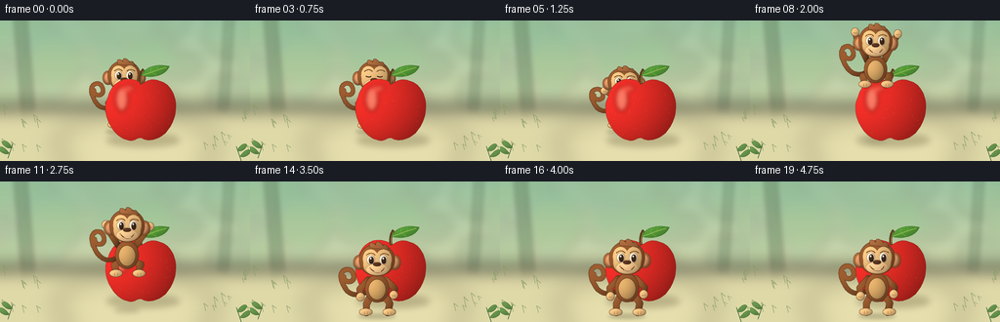
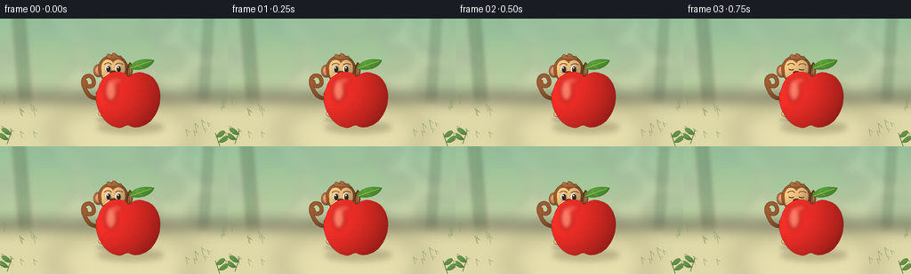

CODING AGENTS AS PIXEL WORLD MODELS
traex/GPT-6.1-Sol · dynamic_spatial_relationship_0054
点击播放 · 原生 RGB 像素
逐轮保存的候选
回放视频、检查图与代码变化。
每份候选均可单独播放。实际图片检查记录在下方工具轨迹中。
候选 01播放与检查图
点击播放 · 原生 RGB 像素


展开代码变化
--- 上一保存版本
+++ 本次保存版本
@@ -0,0 +1,217 @@
+from pathlib import Path
+import math
+import numpy as np
+from PIL import Image, ImageDraw, ImageFilter
+import artifact_io
+
+ROOT=Path(__file__).resolve().parent
+W,H,S=256,144,4
+WW,HH=W*S,H*S
+rng=np.random.default_rng(10)
+Y,X=np.mgrid[0:HH,0:WW].astype(float); X/=S; Y/=S
+
+def path_poly(points,steps=24):
+ # cubic Bezier path: initial point followed by triples
+ p0=np.array(points[0],float); out=[tuple(p0)]
+ for i in range(1,len(points),3):
+ p1,p2,p3=map(lambda p:np.array(p,float),points[i:i+3])
+ for t in np.linspace(0,1,steps)[1:]:
+ p=(1-t)**3*p0+3*(1-t)**2*t*p1+3*(1-t)*t*t*p2+t**3*p3
+ out.append(tuple(p))
+ p0=p3
+ return out
+
+def mask_poly(pts):
+ m=Image.new('L',(WW,HH)); ImageDraw.Draw(m).polygon([(round(x*S),round(y*S)) for x,y in pts],fill=255); return m
+
+def shaded(im,mask,color,center,radii,kind='round',edge=(72,39,24),outline=.45):
+ cx,cy=center; rx,ry=radii
+ xx=(X-cx)/rx; yy=(Y-cy)/ry
+ zz=np.sqrt(np.maximum(0,1-np.minimum(1,xx*xx*.55+yy*yy*.55)))
+ light=np.clip(.73+.23*zz-.14*xx-.12*yy,.46,1.14)
+ if kind=='apple':
+ light=np.clip(.63+.32*zz-.20*xx-.09*yy,.38,1.14)
+ arr=np.empty((HH,WW,3),dtype=np.uint8)
+ for j,c in enumerate(color): arr[:,:,j]=np.clip(c*light,0,255)
+ if outline:
+ outer=mask.filter(ImageFilter.MaxFilter(2*int(max(1,outline*S))+1))
+ im.paste(edge,(0,0),outer)
+ im.paste(Image.fromarray(arr),(0,0),mask)
+
+def ell(im,box,col,edge=(75,42,25),outline=.35):
+ m=Image.new('L',(WW,HH)); ImageDraw.Draw(m).ellipse(tuple(round(v*S) for v in box),fill=255)
+ shaded(im,m,col,((box[0]+box[2])/2,(box[1]+box[3])/2),((box[2]-box[0])/2,(box[3]-box[1])/2),edge=edge,outline=outline)
+
+def line(im,points,col,width):
+ ImageDraw.Draw(im).line([(round(x*S),round(y*S)) for x,y in points],fill=col,width=max(1,round(width*S)),joint='curve')
+
+def tube(im,pts,width,col,edge=(79,43,26)):
+ m=Image.new('L',(WW,HH)); d=ImageDraw.Draw(m); ps=[(round(x*S),round(y*S)) for x,y in pts]
+ d.line(ps,fill=255,width=round(width*S),joint='curve')
+ r=width*S/2
+ for x,y in (ps[0],ps[-1]): d.ellipse((int(x-r),int(y-r),int(x+r),int(y+r)),fill=255)
+ xs=[p[0] for p in pts];ys=[p[1] for p in pts]
+ shaded(im,m,col,((min(xs)+max(xs))/2,(min(ys)+max(ys))/2),(max(6,(max(xs)-min(xs))/2),max(6,(max(ys)-min(ys))/2)),edge=edge,outline=.35)
+
+def soft_ellipse(im,box,col,blur):
+ lay=Image.new('RGBA',(WW,HH));ImageDraw.Draw(lay).ellipse(tuple(int(v*S) for v in box),fill=col)
+ lay=lay.filter(ImageFilter.GaussianBlur(blur*S));im.paste(lay,(0,0),lay)
+
+# Painted, softly defocused tropical garden. Static camera and light.
+bg=np.empty((HH,WW,3),np.uint8)
+for j,(top,bottom) in enumerate([(161,225),(199,222),(165,174)]):
+ f=np.clip(Y/117,0,1)
+ bg[:,:,j]=(top*(1-f)+bottom*f).astype(np.uint8)
+background=Image.fromarray(bg)
+foliage=Image.new('RGBA',(WW,HH))
+d=ImageDraw.Draw(foliage)
+for i in range(65):
+ x=rng.uniform(-35,292);y=rng.uniform(-30,81);r=rng.uniform(7,33)
+ c=(int(rng.uniform(77,130)),int(rng.uniform(133,172)),int(rng.uniform(84,123)),int(rng.uniform(23,58)))
+ d.ellipse(((x-r)*S,(y-r*.7)*S,(x+r)*S,(y+r*.7)*S),fill=c)
+foliage=foliage.filter(ImageFilter.GaussianBlur(6*S));background.paste(foliage,(0,0),foliage)
+# soft tree trunks at the sides
+tr=Image.new('RGBA',(WW,HH));dt=ImageDraw.Draw(tr)
+dt.polygon([(15*S,0),(27*S,0),(35*S,93*S),(23*S,102*S)],fill=(84,115,81,90))
+dt.polygon([(230*S,0),(239*S,0),(233*S,94*S),(224*S,95*S)],fill=(92,121,86,74))
+tr=tr.filter(ImageFilter.GaussianBlur(2.6*S));background.paste(tr,(0,0),tr)
+# ground: continuous warm sunlit plane
+floor=Image.new('RGBA',(WW,HH));df=ImageDraw.Draw(floor)
+df.rectangle((0,89*S,WW,HH),fill=(223,217,168,255));floor=floor.filter(ImageFilter.GaussianBlur(9*S));background.paste(floor,(0,0),floor)
+soft_ellipse(background,(57,96,222,155),(247,235,183,73),12)
+# Some out of focus grass at edges
+for side in [0,1]:
+ for i in range(12):
+ x=rng.uniform(-5,45) if side==0 else rng.uniform(211,267)
+ y=rng.uniform(95,135); l=rng.uniform(4,11)
+ line(background,[(x-1,y),(x-3,y-l),(x+1,y-l*.6)],(135,155,100),.5)
+
+# Apple as a single shaded continuous object, with a curved stalk and leaf.
+def draw_apple(im):
+ soft_ellipse(im,(109,116,184,129),(79,69,36,71),3.3)
+ pts=path_poly([(146,65),(132,55),(115,61),(111,78),(102,94),(116,119),(130,122),(137,125),(140,119),(145,120),(151,125),(164,121),(170,114),(187,94),(180,66),(163,62),(155,59),(150,62),(146,65)])
+ m=mask_poly(pts)
+ shaded(im,m,(234,45,38),(145,89),(37,33),kind='apple',edge=(140,38,27),outline=.45)
+ # specular surface reflection, masked to the skin
+ hi=Image.new('RGBA',(WW,HH));dh=ImageDraw.Draw(hi)
+ dh.ellipse((118*S,68*S,131*S,93*S),fill=(255,218,176,112))
+ dh.ellipse((124*S,66*S,138*S,73*S),fill=(255,206,162,66))
+ hi=hi.filter(ImageFilter.GaussianBlur(2.3*S))
+ alpha=np.minimum(np.array(hi.getchannel('A')),np.array(m)); hi.putalpha(Image.fromarray(alpha));im.paste(hi,(0,0),hi)
+ # discrete tiny natural lenticels
+ specks=Image.new('RGBA',(WW,HH)); ds=ImageDraw.Draw(specks)
+ for i in range(45):
+ x=float(rng.uniform(113,177));y=float(rng.uniform(71,118))
+ if m.getpixel((int(x*S),int(y*S)))>0:
+ ds.ellipse(((x-.17)*S,(y-.17)*S,(x+.17)*S,(y+.17)*S),fill=(255,202,124,55))
+ im.paste(specks,(0,0),specks)
+ line(im,path_poly([(145,65),(143,62),(144,54),(147,50)]),(81,57,29),3.1)
+ line(im,path_poly([(144.5,64),(144,60),(145,54),(147,51)]),(161,112,57),.9)
+ leaf=path_poly([(145,56),(152,43),(169,46),(173,47),(168,57),(155,59),(145,56)])
+ shaded(im,mask_poly(leaf),(84,155,55),(160,51),(15,8),edge=(56,107,38),outline=.25)
+ line(im,path_poly([(146,56),(153,54),(161,50),(170,48)]),(177,202,92),.7)
+ for a,b in [((154,53),(155,48)),((160,51),(162,47)),((155,53),(160,56))]:line(im,[a,b],(125,174,66),.4)
+
+apple_layer=background.copy(); draw_apple(apple_layer)
+
+# Local articulated cartoon monkey; y=0 is the standing ground contact.
+def draw_monkey(im,cx,base,scale,jump=0,crouch=0,phase=0):
+ def p(x,y):return (cx+x*scale,base+(y+crouch*max(0,-y)/77)*scale)
+ def e(box,c,edge=(76,43,27),o=.35):
+ a=p(box[0],box[1]);b=p(box[2],box[3]);ell(im,(*a,*b),c,edge,o)
+ def t(pts,w,c):tube(im,[p(x,y) for x,y in pts],w*scale,c)
+ def l(pts,c,w):line(im,[p(x,y) for x,y in pts],c,w*scale)
+ fur=(149,88,45); lightfur=(170,106,60); tan=(241,194,128)
+ # flexible long tail with a very characteristic curled tip
+ wag=math.sin(phase*.8)*1.2+3*jump
+ tail=path_poly([(-8,-27),(-20,-21),(-29,-22-wag),(-34,-34-wag),(-44,-52-wag),(-25,-57-wag),(-24,-44-wag),(-23,-36-wag),(-34,-36-wag),(-34,-43-wag)])
+ t(tail,4.4,fur)
+ # legs tuck visibly in midair
+ knee=jump*9
+ t([(-6,-23),(-11-jump*3,-13-knee),(-11,-4-knee)],6.5,fur)
+ t([(6,-23),(13+jump*3,-14-knee),(11,-4-knee)],6.5,fur)
+ e((-18,-8-knee,-5,-1-knee),tan)
+ e((6,-8-knee,19,-1-knee),tan)
+ for xx in [-13,-10,11,14]:l([(xx,-5-knee),(xx,-2-knee)],(171,120,73),.5)
+ # shoulders and active curved arms
+ if jump>0:
+ left=[(-9,-39),(-20,-46-16*jump),(-22,-46-24*jump)]
+ right=[(9,-39),(20,-44-16*jump),(24,-44-24*jump)]
+ else:
+ left=[(-9,-39),(-18,-29),(-17,-21)]
+ right=[(9,-39),(18,-30),(17,-23)]
+ t(left,6,fur);t(right,6,fur)
+ for arm in [left,right]:
+ hx,hy=arm[-1];e((hx-4,hy-4,hx+4,hy+4.5),tan)
+ l([(hx-2,hy+1),(hx+2,hy+1)],(168,116,69),.5)
+ # pear-shaped body and velvet light belly
+ e((-12,-44,12,-15),fur)
+ e((-8.5,-39,8.5,-18),(220,170,103),o=.1)
+ # ears behind oversized friendly head
+ e((-24,-65,-12,-50),lightfur)
+ e((12,-65,24,-50),lightfur)
+ e((-21.7,-62.8,-14.3,-52.2),(226,154,105),o=0)
+ e((14.3,-62.8,21.7,-52.2),(226,154,105),o=0)
+ e((-18,-77,18,-43),fur)
+ # gently pointed crown tuft
+ tuft=path_poly([(-7,-73),(-9,-80),(-4,-79),(-1,-75),(-2,-82),(4,-79),(6,-75),(10,-78),(11,-73),(12,-71)])
+ shaded(im,mask_poly([p(*z) for z in tuft]),lightfur,p(1,-74),(12*scale,10*scale),edge=(76,43,27),outline=.2)
+ # connected pale spectacle-shaped face mask
+ face=path_poly([(-14,-57),(-17,-72),(-4,-75),(0,-67),(5,-76),(18,-70),(14,-56),(14,-47),(7,-44),(0,-45),(-8,-43),(-15,-49),(-14,-57)])
+ shaded(im,mask_poly([p(*z) for z in face]),tan,p(0,-60),(16*scale,15*scale),edge=(139,85,43),outline=.15)
+ # eyebrow accents
+ l(path_poly([(-11,-65),(-8,-68),(-4,-68),(-2,-65)]),(106,61,31),.8)
+ l(path_poly([(3,-65),(6,-68),(10,-67),(12,-65)]),(106,61,31),.8)
+ blink = phase in (3,17)
+ for xx in [-6.4,6.4]:
+ if blink:l(path_poly([(xx-3,-60),(xx,-58.7),(xx+2,-59),(xx+3,-60)]),(66,40,24),1)
+ else:
+ e((xx-3.8,-65,xx+3.8,-55.5),(254,243,218),edge=(152,100,55),o=.2)
+ e((xx-1.6,-63.3,xx+2.7,-56.2),(66,41,25),edge=(55,35,23),o=.1)
+ e((xx-.9,-62.6,xx+.65,-60.7),(255,255,239),o=0)
+ # broad projecting muzzle and nose
+ e((-11,-56,11,-44),(247,202,143),edge=(183,126,74),o=.15)
+ e((-3.8,-57.3,3.8,-53.7),(94,55,34),o=.1)
+ l(path_poly([(-6.4,-50.5),(-2,-45.6),(4,-46),(7,-50.8)]),(113,58,34),.9)
+ # lip highlight and tiny dimples
+ l(path_poly([(-3,-47.9),(0,-47),(2,-47.1),(4,-48)]),(255,220,171),.55)
+ e((-8,-52.2,-6.6,-50.8),(217,148,98),o=0)
+ e((6.6,-52.2,8,-50.8),(217,148,98),o=0)
+
+frames=[]
+for i in range(20):
+ # flight follows an arc toward the camera: behind -> above -> in front.
+ if i<=4:
+ base=111+math.sin(i*.7)*.6;scale=.91;cx=127;air=0;crouch=0;front=False
+ elif i==5:base=112;scale=.91;cx=127;air=.12;crouch=7;front=False
+ elif i==6:base=96;scale=.93;cx=127.5;air=.77;crouch=0;front=False
+ elif i==7:base=83;scale=.94;cx=128;air=1;crouch=0;front=False
+ elif i==8:base=78;scale=.95;cx=128.5;air=1;crouch=0;front=True
+ elif i==9:base=80;scale=.96;cx=129;air=1;crouch=0;front=True
+ elif i==10:base=89;scale=.97;cx=129.5;air=.90;crouch=0;front=True
+ elif i==11:base=104;scale=.98;cx=130;air=.64;crouch=0;front=True
+ elif i==12:base=123;scale=1.;cx=130;air=.28;crouch=0;front=True
+ elif i==13:base=138;scale=1.;cx=130;air=0;crouch=8;front=True
+ elif i==14:base=138;scale=1.;cx=130;air=0;crouch=3;front=True
+ else:base=138+math.sin((i-15)*.7)*.35;scale=1.;cx=130;air=0;crouch=0;front=True
+ im=background.copy()
+ shadow_y=114+24*np.clip((i-5)/8,0,1)
+ shadow_w=19-9*air
+ soft_ellipse(im,(cx-shadow_w,shadow_y-2.3,cx+shadow_w,shadow_y+2.3),(74,65,38,int(70-27*air)),1.8+air*1.2)
+ if front:
+ # identical apple, retained pixel for pixel except cast shadows underneath
+ draw_apple(im)
+ draw_monkey(im,cx,base,scale,air,crouch,i)
+ else:
+ draw_monkey(im,cx,base,scale,air,crouch,i)
+ draw_apple(im)
+ # restrained foreground leaves framing the miniature scene
+ for x,y,sg in [(8,141,1),(247,144,-1)]:
+ line(im,[(x,y),(x+sg*5,y-15)],(67,105,58),.8)
+ for xx,yy,sz in [(x+sg*1,y-5,7),(x+sg*4,y-11,6)]:
+ leaf=path_poly([(xx,yy),(xx-sg*sz,yy-10),(xx-sg*(sz+5),yy-6),(xx-sg*(sz+3),yy-4),(xx-sg*6,yy+1),(xx-sg*2,yy+1),(xx,yy)])
+ shaded(im,mask_poly(leaf),(104,151,77),(xx-sg*5,yy-3),(10,6),edge=(67,108,49),outline=.2)
+ frame=np.asarray(im.resize((W,H),Image.Resampling.LANCZOS).convert('RGB'),dtype=np.uint8)
+ frames.append(frame)
+artifact_io.save(np.stack(frames),ROOT)
+print('Saved 20 RGB frames at 256 x 144, 4 fps.')
可观测工具轨迹
实际执行的命令与返回图片。
命令 1exit 0
/bin/bash -lc 'ls -la && cat prompt.txt && cat GENERATION_RULES.md && cat task_spec.json'
命令 2exit 0
/bin/bash -lc 'cat artifact_io.py'
命令 3exit 0
/bin/bash -lc "cat > generate.py <<'PY'
from pathlib import Path
import math
import numpy as np
from PIL import Image, ImageDraw, ImageFilter
import artifact_io
ROOT=Path(__file__).resolve().parent
W,H,S=256,144,4
WW,HH=W*S,H*S
rng=np.random.default_rng(10)
Y,X=np.mgrid[0:HH,0:WW].astype(float); X/=S; Y/=S
def path_poly(points,steps=24):
# cubic Bezier path: initial point followed by triples
p0=np.array(points[0],float); out=[tuple(p0)]
for i in range(1,len(points),3):
p1,p2,p3=map(lambda p:np.array(p,float),points[i:i+3])
for t in np.linspace(0,1,steps)[1:]:
p=(1-t)**3*p0+3*(1-t)**2*t*p1+3*(1-t)*t*t*p2+t**3*p3
out.append(tuple(p))
p0=p3
return out
def mask_poly(pts):
m=Image.new('L',(WW,HH)); ImageDraw.Draw(m).polygon([(round(x*S),round(y*S)) for x,y in pts],fill=255); return m
def shaded(im,mask,color,center,radii,kind='round',edge=(72,39,24),outline=.45):
cx,cy=center; rx,ry=radii
xx=(X-cx)/rx; yy=(Y-cy)/ry
zz=np.sqrt(np.maximum(0,1-np.minimum(1,xx*xx*.55+yy*yy*.55)))
light=np.clip(.73+.23*zz-.14*xx-.12*yy,.46,1.14)
if kind=='apple':
light=np.clip(.63+.32*zz-.20*xx-.09*yy,.38,1.14)
arr=np.empty((HH,WW,3),dtype=np.uint8)
for j,c in enumerate(color): arr[:,:,j]=np.clip(c*light,0,255)
if outline:
outer=mask.filter(ImageFilter.MaxFilter(2*int(max(1,outline*S))+1))
im.paste(edge,(0,0),outer)
im.paste(Image.fromarray(arr),(0,0),mask)
def ell(im,box,col,edge=(75,42,25),outline=.35):
m=Image.new('L',(WW,HH)); ImageDraw.Draw(m).ellipse(tuple(round(v*S) for v in box),fill=255)
shaded(im,m,col,((box[0]+box[2])/2,(box[1]+box[3])/2),((box[2]-box[0])/2,(box[3]-box[1])/2),edge=edge,outline=outline)
def line(im,points,col,width):
ImageDraw.Draw(im).line([(round(x*S),round(y*S)) for x,y in points],fill=col,width=max(1,round(width*S)),joint='curve')
def tube(im,pts,width,col,edge=(79,43,26)):
m=Image.new('L',(WW,HH)); d=ImageDraw.Draw(m); ps=[(round(x*S),round(y*S)) for x,y in pts]
d.line(ps,fill=255,width=round(width*S),joint='curve')
r=width*S/2
for x,y in (ps[0],ps[-1]): d.ellipse((int(x-r),int(y-r),int(x+r),int(y+r)),fill=255)
xs=[p[0] for p in pts];ys=[p[1] for p in pts]
shaded(im,m,col,((min(xs)+max(xs))/2,(min(ys)+max(ys))/2),(max(6,(max(xs)-min(xs))/2),max(6,(max(ys)-min(ys))/2)),edge=edge,outline=.35)
def soft_ellipse(im,box,col,blur):
lay=Image.new('RGBA',(WW,HH));ImageDraw.Draw(lay).ellipse(tuple(int(v*S) for v in box),fill=col)
lay=lay.filter(ImageFilter.GaussianBlur(blur*S));im.paste(lay,(0,0),lay)
# Painted, softly defocused tropical garden. Static camera and light.
bg=np.empty((HH,WW,3),np.uint8)
for j,(top,bottom) in enumerate([(161,225),(199,222),(165,174)]):
f=np.clip(Y/117,0,1)
bg[:,:,j]=(top*(1-f)+bottom*f).astype(np.uint8)
background=Image.fromarray(bg)
foliage=Image.new('RGBA',(WW,HH))
d=ImageDraw.Draw(foliage)
for i in range(65):
x=rng.uniform(-35,292);y=rng.uniform(-30,81);r=rng.uniform(7,33)
c=(int(rng.uniform(77,130)),int(rng.uniform(133,172)),int(rng.uniform(84,123)),int(rng.uniform(23,58)))
d.ellipse(((x-r)*S,(y-r*.7)*S,(x+r)*S,(y+r*.7)*S),fill=c)
foliage=foliage.filter(ImageFilter.GaussianBlur(6*S));background.paste(foliage,(0,0),foliage)
# soft tree trunks at the sides
tr=Image.new('RGBA',(WW,HH));dt=ImageDraw.Draw(tr)
dt.polygon([(15*S,0),(27*S,0),(35*S,93*S),(23*S,102*S)],fill=(84,115,81,90))
dt.polygon([(230*S,0),(239*S,0),(233*S,94*S),(224*S,95*S)],fill=(92,121,86,74))
tr=tr.filter(ImageFilter.GaussianBlur(2.6*S));background.paste(tr,(0,0),tr)
# ground: continuous warm sunlit plane
floor=Image.new('RGBA',(WW,HH));df=ImageDraw.Draw(floor)
df.rectangle((0,89*S,WW,HH),fill=(223,217,168,255));floor=floor.filter(ImageFilter.GaussianBlur(9*S));background.paste(floor,(0,0),floor)
soft_ellipse(background,(57,96,222,155),(247,235,183,73),12)
# Some out of focus grass at edges
for side in [0,1]:
for i in range(12):
x=rng.uniform(-5,45) if side==0 else rng.uniform(211,267)
y=rng.uniform(95,135); l=rng.uniform(4,11)
line(background,[(x-1,y),(x-3,y-l),(x+1,y-l*.6)],(135,155,100),.5)
# Apple as a single shaded continuous object, with a curved stalk and leaf.
def draw_apple(im):
soft_ellipse(im,(109,116,184,129),(79,69,36,71),3.3)
pts=path_poly([(146,65),(132,55),(115,61),(111,78),(102,94),(116,119),(130,122),(137,125),(140,119),(145,120),(151,125),(164,121),(170,114),(187,94),(180,66),(163,62),(155,59),(150,62),(146,65)])
m=mask_poly(pts)
shaded(im,m,(234,45,38),(145,89),(37,33),kind='apple',edge=(140,38,27),outline=.45)
# specular surface reflection, masked to the skin
hi=Image.new('RGBA',(WW,HH));dh=ImageDraw.Draw(hi)
dh.ellipse((118*S,68*S,131*S,93*S),fill=(255,218,176,112))
dh.ellipse((124*S,66*S,138*S,73*S),fill=(255,206,162,66))
hi=hi.filter(ImageFilter.GaussianBlur(2.3*S))
alpha=np.minimum(np.array(hi.getchannel('A')),np.array(m)); hi.putalpha(Image.fromarray(alpha));im.paste(hi,(0,0),hi)
# discrete tiny natural lenticels
specks=Image.new('RGBA',(WW,HH)); ds=ImageDraw.Draw(specks)
for i in range(45):
x=float(rng.uniform(113,177));y=float(rng.uniform(71,118))
if m.getpixel((int(x*S),int(y*S)))>0:
ds.ellipse(((x-.17)*S,(y-.17)*S,(x+.17)*S,(y+.17)*S),fill=(255,202,124,55))
im.paste(specks,(0,0),specks)
line(im,path_poly([(145,65),(143,62),(144,54),(147,50)]),(81,57,29),3.1)
line(im,path_poly([(144.5,64),(144,60),(145,54),(147,51)]),(161,112,57),.9)
leaf=path_poly([(145,56),(152,43),(169,46),(173,47),(168,57),(155,59),(145,56)])
shaded(im,mask_poly(leaf),(84,155,55),(160,51),(15,8),edge=(56,107,38),outline=.25)
line(im,path_poly([(146,56),(153,54),(161,50),(170,48)]),(177,202,92),.7)
for a,b in [((154,53),(155,48)),((160,51),(162,47)),((155,53),(160,56))]:line(im,[a,b],(125,174,66),.4)
apple_layer=background.copy(); draw_apple(apple_layer)
# Local articulated cartoon monkey; y=0 is the standing ground contact.
def draw_monkey(im,cx,base,scale,jump=0,crouch=0,phase=0):
def p(x,y):return (cx+x*scale,base+(y+crouch*max(0,-y)/77)*scale)
def e(box,c,edge=(76,43,27),o=.35):
a=p(box[0],box[1]);b=p(box[2],box[3]);ell(im,(*a,*b),c,edge,o)
def t(pts,w,c):tube(im,[p(x,y) for x,y in pts],w*scale,c)
def l(pts,c,w):line(im,[p(x,y) for x,y in pts],c,w*scale)
fur=(149,88,45); lightfur=(170,106,60); tan=(241,194,128)
# flexible long tail with a very characteristic curled tip
wag=math.sin(phase*.8)*1.2+3*jump
tail=path_poly([(-8,-27),(-20,-21),(-29,-22-wag),(-34,-34-wag),(-44,-52-wag),(-25,-57-wag),(-24,-44-wag),(-23,-36-wag),(-34,-36-wag),(-34,-43-wag)])
t(tail,4.4,fur)
# legs tuck visibly in midair
knee=jump*9
t([(-6,-23),(-11-jump*3,-13-knee),(-11,-4-knee)],6.5,fur)
t([(6,-23),(13+jump*3,-14-knee),(11,-4-knee)],6.5,fur)
e((-18,-8-knee,-5,-1-knee),tan)
e((6,-8-knee,19,-1-knee),tan)
for xx in [-13,-10,11,14]:l([(xx,-5-knee),(xx,-2-knee)],(171,120,73),.5)
# shoulders and active curved arms
if jump>0:
left=[(-9,-39),(-20,-46-16*jump),(-22,-46-24*jump)]
right=[(9,-39),(20,-44-16*jump),(24,-44-24*jump)]
else:
left=[(-9,-39),(-18,-29),(-17,-21)]
right=[(9,-39),(18,-30),(17,-23)]
t(left,6,fur);t(right,6,fur)
for arm in [left,right]:
hx,hy=arm[-1];e((hx-4,hy-4,hx+4,hy+4.5),tan)
l([(hx-2,hy+1),(hx+2,hy+1)],(168,116,69),.5)
# pear-shaped body and velvet light belly
e((-12,-44,12,-15),fur)
e((-8.5,-39,8.5,-18),(220,170,103),o=.1)
# ears behind oversized friendly head
e((-24,-65,-12,-50),lightfur)
e((12,-65,24,-50),lightfur)
e((-21.7,-62.8,-14.3,-52.2),(226,154,105),o=0)
e((14.3,-62.8,21.7,-52.2),(226,154,105),o=0)
e((-18,-77,18,-43),fur)
# gently pointed crown tuft
tuft=path_poly([(-7,-73),(-9,-80),(-4,-79),(-1,-75),(-2,-82),(4,-79),(6,-75),(10,-78),(11,-73),(12,-71)])
shaded(im,mask_poly([p(*z) for z in tuft]),lightfur,p(1,-74),(12*scale,10*scale),edge=(76,43,27),outline=.2)
# connected pale spectacle-shaped face mask
face=path_poly([(-14,-57),(-17,-72),(-4,-75),(0,-67),(5,-76),(18,-70),(14,-56),(14,-47),(7,-44),(0,-45),(-8,-43),(-15,-49),(-14,-57)])
shaded(im,mask_poly([p(*z) for z in face]),tan,p(0,-60),(16*scale,15*scale),edge=(139,85,43),outline=.15)
# eyebrow accents
l(path_poly([(-11,-65),(-8,-68),(-4,-68),(-2,-65)]),(106,61,31),.8)
l(path_poly([(3,-65),(6,-68),(10,-67),(12,-65)]),(106,61,31),.8)
blink = phase in (3,17)
for xx in [-6.4,6.4]:
if blink:l(path_poly([(xx-3,-60),(xx,-58.7),(xx+2,-59),(xx+3,-60)]),(66,40,24),1)
else:
e((xx-3.8,-65,xx+3.8,-55.5),(254,243,218),edge=(152,100,55),o=.2)
e((xx-1.6,-63.3,xx+2.7,-56.2),(66,41,25),edge=(55,35,23),o=.1)
e((xx-.9,-62.6,xx+.65,-60.7),(255,255,239),o=0)
# broad projecting muzzle and nose
e((-11,-56,11,-44),(247,202,143),edge=(183,126,74),o=.15)
e((-3.8,-57.3,3.8,-53.7),(94,55,34),o=.1)
l(path_poly([(-6.4,-50.5),(-2,-45.6),(4,-46),(7,-50.8)]),(113,58,34),.9)
# lip highlight and tiny dimples
l(path_poly([(-3,-47.9),(0,-47),(2,-47.1),(4,-48)]),(255,220,171),.55)
e((-8,-52.2,-6.6,-50.8),(217,148,98),o=0)
e((6.6,-52.2,8,-50.8),(217,148,98),o=0)
frames=[]
for i in range(20):
# flight follows an arc toward the camera: behind -> above -> in front.
if i<=4:
base=111+math.sin(i*.7)*.6;scale=.91;cx=127;air=0;crouch=0;front=False
elif i==5:base=112;scale=.91;cx=127;air=.12;crouch=7;front=False
elif i==6:base=96;scale=.93;cx=127.5;air=.77;crouch=0;front=False
elif i==7:base=83;scale=.94;cx=128;air=1;crouch=0;front=False
elif i==8:base=78;scale=.95;cx=128.5;air=1;crouch=0;front=True
elif i==9:base=80;scale=.96;cx=129;air=1;crouch=0;front=True
elif i==10:base=89;scale=.97;cx=129.5;air=.90;crouch=0;front=True
elif i==11:base=104;scale=.98;cx=130;air=.64;crouch=0;front=True
elif i==12:base=123;scale=1.;cx=130;air=.28;crouch=0;front=True
elif i==13:base=138;scale=1.;cx=130;air=0;crouch=8;front=True
elif i==14:base=138;scale=1.;cx=130;air=0;crouch=3;front=True
else:base=138+math.sin((i-15)*.7)*.35;scale=1.;cx=130;air=0;crouch=0;front=True
im=background.copy()
shadow_y=114+24*np.clip((i-5)/8,0,1)
shadow_w=19-9*air
soft_ellipse(im,(cx-shadow_w,shadow_y-2.3,cx+shadow_w,shadow_y+2.3),(74,65,38,int(70-27*air)),1.8+air*1.2)
if front:
# identical apple, retained pixel for pixel except cast shadows underneath
draw_apple(im)
draw_monkey(im,cx,base,scale,air,crouch,i)
else:
draw_monkey(im,cx,base,scale,air,crouch,i)
draw_apple(im)
# restrained foreground leaves framing the miniature scene
for x,y,sg in [(8,141,1),(247,144,-1)]:
line(im,[(x,y),(x+sg*5,y-15)],(67,105,58),.8)
for xx,yy,sz in [(x+sg*1,y-5,7),(x+sg*4,y-11,6)]:
leaf=path_poly([(xx,yy),(xx-sg*sz,yy-10),(xx-sg*(sz+5),yy-6),(xx-sg*(sz+3),yy-4),(xx-sg*6,yy+1),(xx-sg*2,yy+1),(xx,yy)])
shaded(im,mask_poly(leaf),(104,151,77),(xx-sg*5,yy-3),(10,6),edge=(67,108,49),outline=.2)
frame=np.asarray(im.resize((W,H),Image.Resampling.LANCZOS).convert('RGB'),dtype=np.uint8)
frames.append(frame)
artifact_io.save(np.stack(frames),ROOT)
print('Saved 20 RGB frames at 256 x 144, 4 fps.')
PY
python generate.py"命令 4exit 1
/bin/bash -lc "command -v ffmpeg && ls -lh pixels.npz index.html inspection.png && python - <<'PY'
import numpy as np
p=np.load('pixels.npz')['pixels']
print('Stored video shape:',p.shape, 'dtype:',p.dtype)
PY"命令 5exit 0
/bin/bash -lc "ls -lh generate.py pixels.npz index.html inspection.png && python - <<'PY'
import numpy as np
from pathlib import Path
p=np.load('pixels.npz')['pixels']
assert p.shape==(144,256,20)
assert len(list(Path('frames').glob('*.png')))==20
print('Validated 20 RGB frames and playback artifacts.')
PY"视觉工具实际返回图片 1

保存候选 1 份；完成命令 5 次；可验证图片返回 1 张。原始 API 响应与完整日志保留在本地。